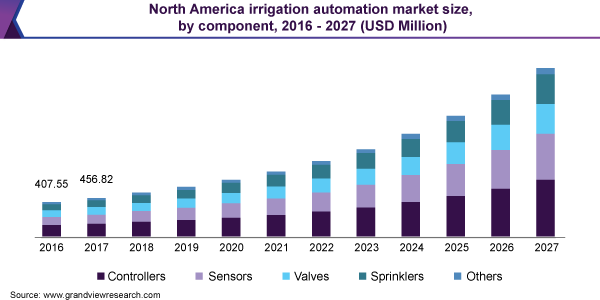

My name is Si Xue Chen, my student ID is s3848461, my email is s3848461@student.rmit.edu.au, my nationality is Chinese, and the highest education I have received so far is grade12. I like to speak English But I speak Chinese more in daily life. I like sports such as running and rock climbing. Running is my favorite aerobic exercise. I can run for 1 hour continuously. I enjoy this process very much. I like playing games, such as League of Legends and so on.
My interest in it is when I was in high school, I was very interested in online games, but the computer is slow, I found that my computer graphics card is AMD integrated graphics, so I try to learn some knowledge about computer accessories, and then I know what accessories can make the computer run smoothly, and some IT-related knowledge makes me become interested in IT. I am very interested in design because I don't know how to make a game. Because rmit’s campus design is very artistic, and here is the center of Melbourne, you can feel the charm of different cultures. And rmit has a high academic ranking in IT, I hope to come here to study, and the RMIT classroom has an academic atmosphere and a sense of design. I hope to learn more about the operation of HTMl and CSS, as well as some programming languages in my future studies.
It service desk officer, the officer engaged in this job needs to provide customer service to employees in the Asia-Pacific region, support the IT desk and become the initial contact in the Asia-Pacific region. As an it service desk officer, you must understand the basic AD functions. Undertake the assigned projects and responsibilities and help the global IT team complete tasks and projects, assist the internal IT department to carry out all activities, manage security issues on the telephone system, and manage and repair knowledge base articles and documents with the help of confluence. I think what attracts me to this job is the need to contact and communicate with different people, and to complete projects with different IT teams, and Confluence is a good way to provide team cooperation and organizational resource sharing, which can increase the exchange of information in different areas between teams. I hope I can manage the AD function, because this can establish the security of the AD domain, and can transfer the management authority to HR to reduce the workload(TeamViewer Pty Ltd,2021).
In order to take up this job, I first need to master basic IT knowledge and be familiar with windows applications and various operating systems such as ios/android, and desktop operating systems, fully grasp all board systems, and understand computing trends. Familiar with the voice call system is like VOIP. To understand wondows AD, I need to have good communication skills. In order to take up this job, I need good literacy and calculation skills, 5 GCSEs (c or above, NVQ level2(TeamViewer Pty Ltd, 2021).
Understand the basic knowledge of it, and have a preliminary grasp of the calculation of the C language in programming and the meaning of some symbols, and some basic database concepts, and will use html and css to create a website in github,Learned some basic concepts about elements and attributes in the HTML language.
I will further study and proficiently use html and css to build a website, and try to use javascript to enrich the content of the website. Further learn to use python to program, like pre-defined functions to calculate dynamic code that changes over time. Learn more about CSS Basic, become familiar with github's various features, master more advanced HTMlL text formats, and learn more about documents and website structures.
The result of my test is logistician. Rather than making many assumptions, the logistics engineer prefers to arrive at a practical plan of action based on facts and circumstances, and hope that people around him will take action based on the facts. When the logistics engineer debates with others, he cannot tolerate indiscretion Statements that actually or ignore key information. Logisticians like to work alone, because they can avoid sharing some of the work, because credibility is particularly important for logisticians. Logisticians are not likely to reject others. It is important for logisticians to assume responsibility and ensure the smooth operation of the work. Logisticians like to make many plans and guidelines for themselves, and work towards their goals.

I think this test result accurately describes some aspects of my life. I like to make plans. Although sometimes plans will change based on actual conditions, I will try to complete these plans. Honest and direct character traits I think can build a good reputation at work. Calm and pragmatic traits mean that I will be calm and efficient while encountering big difficulties at work. Since logistics engineers are more inclined to analyze facts and statistics, this allows me to collect and apply new data and obtain details in the workplace. This is my advantage in the workplace. I hope I can apply the collected knowledge well and have a good motivation to learn new knowledge.
Stubborn or meticulous way of thinking may cause me not to deliberately pursue new ideas or focus on creative thinking. If a team member puts forward a creative idea but ignores certain objective factors, it may be difficult for me to accept the team member's point of view. Second, I don’t accept emotional expressions or consider the feelings of the same group of members. If this emotionality affects the progress of the entire team, the inconsistency of such emotions or opinions will lead to inefficiency. Based on the logistician's strong sense of responsibility, he may help the team members or accept some extra work, but this sense of responsibility will become a burden or lead to the failure to achieve the expected results. These factors will affect the team.
I hope that in the formation of the team, I can find members with strong team awareness to achieve the goals together. Although it is important for each member to put forward his own different ideas, it is effective to put forward creative ideas for work or plans. . The possibility of negativity is based on the fact that the team members are overconfident in their own ideas, leading to ignorance of other people's ideas. Second, everyone in the team has a strong sense of responsibility, because people often make a plan to show that each person should bear a specific responsibility in the team. If a specific team member does not have a strong sense of responsibility, they will not pay attention to work，thereby affecting the team’s honor or work progress.
The test results show that I am a visual learner. My learning habit is to look at it visually. For example, when I watch a video about IT, I usually use subtitles and video images to help me understand the content. Combined with my study habits, usually a boring concept makes it difficult for me to understand. If I add pictures and examples of explanation to this concept, it will be easier for me to understand.
Factor 1 is about extroversion. I got 33 points, which is a medium score. Those with high scores in factor 1 are often regarded as being good at social. Factor 2 is emotional stability. I got 39 points, which is also a Average score, which shows that I am not very good at controlling my emotions or easily disturbed by some things. In general, I got a high score in conscientiousness, which means that my character tends to be careful and hardworking rather than impulsive and chaotic, but I got a low score in imagination, and it may take a long time for me to figure it out. An abstract concept, or I lack imagination.
With the continuous advancement of science and technology, people are using hardware for more and more technological DIY. This is a project idea about automatic watering devices. Project vision includes motivation, detailed description of the product, required skills and results. The market scale and commercial value of similar products are constantly increasing, and the products have good development prospects. And in the product description, this product is a related technology developed by hardware arduinos.
I invented this automatic watering device for the convenience of people’s lives. In order to enrich their lives, people usually plant a lot of plants at home. This automatic watering device can help people water well, even after people leave. Can maintain the water supply of plants. According to statistics, the market size of automatic watering devices in 2019 is 2.65 billion U.S. dollars, and it is expected to grow at a rate of 16.8% per year. (artist unknown,2020) This is due to the advancement of science and technology, the traditional agricultural irrigation system The technology is disappearing, which is replaced by advanced automatic irrigation systems, which also reduces labor costs. At the same time, the automatic watering device can continuously ensure the water supply of the plants according to the soil humidity. With the global warming, serious irregular precipitation is causing the increase of soil moisture. The automatic watering device can well control the soil moisture and Irrigation frequency.
The name of my project is an automatic watering device. We need to prepare a lot of tools such as batteries, relays, water pumps, sensing devices and resistive screens. First of all, a battery is needed. The two ends of the battery are connected to the water pump, and the two ends of the relay are connected to the water pump to control the operation of the water pump. The other end of the battery needs to be connected to the voltage module, and the voltage module is connected to the arduino to provide current to ensure the arduino. In normal operation, arduino is chosen instead of raspberry pi because arduino is easy to operate and low in price, which can ensure that the commercialization of the product has a good market operation. At the same time, the raspberry pi can only process digital signals but not analog signals from capacitive sensors. We need to download the ArduinoIDE on the arduino, and then enter the soil moisture. If the soil moisture is lower than a value, the water pump will be turned on, and if the soil concentration is lower than a certain value, the water pump will be turned off. Then there is the question about the circuit. First, the relay needs to be connected to the arduino with three wires in parallel, one end of the arduino motherboard is connected, and the other end of the relay is connected to the voltage, Connect the IN1 on the relay module to the PiN4 on the Arduino, (John Teel,,time unknown)and then the relay is completed. In the series circuit with arduino, the positive and negative wires are connected to the arduino motherboard, and the power supply is connected to the other port of the relay. This requires a breadboard to build an analog circuit, and a resistor is inserted in the middle of the circuit to convert the current into a voltage. , The voltage here cannot exceed 15v, because excessive voltage will cause safety hazards.(Patrick Hallek 2020) At the same time, the public port of the relay is connected to the water pump, the water pipe of the water tank is connected to the soil of the plant, and the positive and negative electrodes of the comparator at the other end are connected to the soil sensor. The sensor can detect the change of soil moisture well by detecting the soil. The humidity changes to provide water to the plants.
First of all, the required skill of the product project is to have a basic understanding of the circuit. Buttons and switches are connected in series with the arduino on the breadboard, and all the required hardware and resistors are connected in series on the breadboard to form a loop to complete. Regarding the code, you need to list two define about soil and delay, and then choose to set the initial soil concentration to 0, and then the fixed arduino code such as void setup and void loop. The required software includes arduino's programming program, and the hardware requires sensors, resistance boards, water pumps, batteries, relays, water tanks, wires, voltages, microcontrollers, and breadboard versions.
Automatic watering devices can help people better manage water resources, because many automatic watering devices on the market do not use hardware such as raspberry pi or arduino open source tools to assist, some are controlled by software, this innovation will Influence or expand the use of arduino.